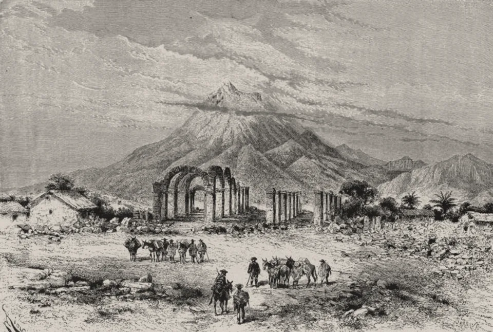

· Edición 13 · 6 min de lectura
Reconstruir rápido o reconstruir a la vista: el Fondo Milagro pide 2,7 billones
Revisada el · 2 actualizaciones posteriores a la publicación

Grabado de Édouard Riou, 1883 · Dominio público, vía Wikimedia Commons
Reconstruir rápido o reconstruir a la vista: el Fondo Milagro pide 2,7 billones
Ver todo el tema, de principio a fin →
En pocas palabras. El terremoto del 10 de agosto dejó más de 31.000 casas destruidas. Para reconstruir, el Gobierno creó el Fondo Milagro, que contrata con reglas de empresa privada, más rápidas y con menos controles. Ahora le pide al Congreso 2,7 billones de pesos para ese fondo. Colombia ya ha hecho esto antes, y la pregunta de siempre vuelve: cómo ir rápido sin perderle el rastro al dinero.
Qué pasó. Piense en una familia que recoge entre todos para arreglar la casa de la abuela después de un temporal. Un primo maneja el dinero. Si compra donde quiere y no muestra los recibos, puede que sea honrado. Pero nadie lo puede saber. Pedir los recibos no es desconfiar del primo: es lo que permite que los demás sigan poniendo.
Eso, en grande, es lo que se discute hoy. El terremoto de magnitud 7,4, con epicentro en San José del Palmar (Chocó), afectó a unas 284.000 personas en 15 departamentos, según la UNGRD, la entidad nacional que atiende los desastres. Cali y Pereira tuvieron los peores daños. Además de las 31.445 casas destruidas, otras 163.884 quedaron averiadas.
El martes 29 de septiembre, el Ministerio de Hacienda le pidió al Congreso modificar el presupuesto de 2026. Son 3,9 billones: 1,2 para la deuda de Air-e (de la que hablamos el miércoles) y 2,7 para el Fondo Milagro. Ese dinero saldría de impuestos y aranceles que el Gobierno cambió durante la emergencia económica.
¿Cuánto es 2,7 billones? El Gobierno calcula que reconstruir costará más de 30 billones. De cada 100 pesos que se necesitan, esta adición pone unos 9. Las aseguradoras pondrían al menos 10 billones.
Cómo llegamos aquí. El Fondo Milagro nació el 9 de septiembre con el Decreto 1379. Es un patrimonio autónomo: una bolsa de dinero que maneja una fiduciaria pública, es decir, una entidad financiera que administra recursos ajenos. Se rige por derecho privado. En palabras simples: contrata como una empresa, sin las licitaciones de la ley de contratación pública. Lo dirige un consejo de siete votos; cinco son representantes del presidente. El nudo se sostiene así:
- En la emergencia, lo rápido le gana a lo vigilado. La ley de desastres de 2012 ya permite contratar con reglas privadas en una calamidad. Tiene sentido para una carpa o un almuerzo. Se vuelve riesgo cuando se usa durante años para construir casas y puentes.
- Ya se ve en los números. Transparencia por Colombia, una organización que vigila la corrupción, revisó el primer mes. Encontró 402 contratos por 88.400 millones de pesos. De cada 10, 8 fueron contratación directa: la entidad escoge al contratista sin que otros compitan. Nueve de cada 10 los firmaron alcaldías y otras entidades municipales.
- Los contratos no siempre se ven. Cuestión Pública, un medio de investigación, no encontró en el Secop (la página pública donde el Estado debe subir sus contratos) ningún contrato de la UNGRD por el terremoto tres días después del sismo. Un tribunal ya le había ordenado a la UNGRD, en 2024, publicar sus contratos ahí.
- Quien decide no paga el costo. Mostrar obras pronto da réditos políticos. El sobrecosto, si aparece, se descubre años después, cuando ya hay otro gobierno. (Conocimiento general.)
Ya pasó antes. Colombia tiene dos experiencias para comparar. Tras el terremoto de 1999 en el Eje Cafetero, se creó el Forec, también con reglas privadas. Pero repartió la ejecución entre organizaciones sociales con experiencia, con veedurías y cuentas públicas. Según balances de la época, los gastos de administración fueron apenas 5,4 de cada 100 pesos. Tras las lluvias de 2010 y 2011 se creó el Fondo Adaptación, con un diseño parecido. Años después, la Contraloría encontró 103 obras en riesgo de quedar sin terminar, muchas de vivienda.
Afuera pasa lo mismo. Un estudio de 2014 comparó dos terremotos en Italia, el de 1976 y el de 1980. Las dos regiones recibieron ayuda. Donde las instituciones eran fuertes, la economía terminó mejor que antes. Donde eran débiles, la ayuda alimentó la corrupción y la economía quedó peor.
¿Hay salida? Hay tres cosas que han funcionado:
- Auditar de verdad. En Indonesia, un experimento con más de 600 obras de carreteras anunció a unas aldeas que serían auditadas casi con seguridad. Ahí el dinero que se perdía bajó 8 puntos. En Brasil, los municipios escogidos al azar para una auditoría tuvieron después menos corrupción.
- Todo contrato, en público y a tiempo. Transparencia por Colombia pide que cada contrato del Fondo Milagro vaya al Secop con un código único, para seguir cada peso de punta a punta.
- Ejecutores con experiencia y cerca de la gente, como en el Forec.
El decreto del Fondo Milagro ya promete una auditoría internacional, escogida por convocatoria pública, además del control de la Contraloría.
Pero ojo. Los controles también cuestan. Cada trámite de más puede significar una familia más tiempo en arriendo prestado. En Providencia, tras el huracán Iota de 2020, el Gobierno prometió reconstruir en 100 días. A los 100 días no había empezado ninguna de las 1.134 casas nuevas. Y en el experimento de Indonesia, pedirles a los vecinos que vigilaran sirvió poco: lo que funcionó fue el auditor. Mirar no basta si nadie revisa.
Dos lecturas
Primero la gente, después el trámite. Hay más de 31.000 familias sin casa. Una licitación normal puede tardar meses. Un fondo ágil, con auditoría internacional y Contraloría, permite empezar ya. Esperar también tiene víctimas.
Rápido, pero con los recibos a la vista. La urgencia es real, pero el fondo durará años, no semanas. Si el dinero se maneja con reglas privadas y los contratos no se publican, el riesgo es repetir el Fondo Adaptación: obras caras y a medio hacer.
Quién decide y cuándo
Quién decide. El Congreso decide si le pasa los 2,7 billones al Fondo Milagro. La Corte Constitucional revisa si la emergencia y los decretos del fondo se ajustan a la Constitución. El consejo del fondo escoge al auditor internacional.
Cuándo. El Gobierno pidió trámite urgente, pero no hay fecha de votación. La Corte tampoco tiene fecha pública.
Cómo participar. Los debates se ven por el Canal Congreso. En la Corte, cualquier ciudadano puede enviar su opinión mientras el proceso está abierto. (Conocimiento general.)
Seguimiento de la decisión
Pendiente · sin fecha fija
Congreso (comisiones económicas de Senado y Cámara): Aprobar o no la adición de 2,7 billones de pesos al presupuesto de 2026 para el Fondo Milagro, que financiará la reconstrucción tras el terremoto del 10 de agosto.
El Ministerio de Hacienda radicó el proyecto el 29 de septiembre, en el mismo paquete del traslado de 1,2 billones para la deuda de Air-e.
Pendiente · sin fecha fija
Corte Constitucional: Decidir si la emergencia económica por el terremoto (Decreto 1261) y los decretos que de ella salieron, como el que creó el Fondo Milagro, se ajustan a la Constitución.
El magistrado ponente es Juan Carlos Cortés. No hay fecha pública para el fallo.
Pendiente · sin fecha fija
Consejo directivo del Fondo Milagro: Escoger, por convocatoria pública, la firma internacional que auditará cómo se gasta el fondo.
Al 30 de septiembre, según Hacienda, la junta no se había podido instalar porque faltaba firmar el contrato de fiducia del fondo.
La paradoja del día
El Fondo Milagro se maneja con reglas privadas para no perder tiempo en trámites. A mediados de septiembre, Transparencia por Colombia todavía no encontraba ni sus contratos ni la fiduciaria que lo iba a administrar. El atajo también tiene fila.
Para conversar
La pregunta. Si su casa se hubiera caído, ¿qué preferiría: que la reconstruyan en seis meses sin saber cuánto costó, o en un año con cada recibo publicado?
Qué puede hacer usted. Si vive en un municipio afectado, busque en el Secop II los contratos de su alcaldía con palabras como «sismo» o «urgencia manifiesta». Si algo no le cuadra, puede pedir información con un derecho de petición.
¿Le interesa ver las fuentes?
18 fuentes: 4 académicas, 3 oficiales, 1 de datos, 1 de una organización, 9 de prensa.
- Prensa El Tiempo. Gobierno pide modificar el Presupuesto de 2026 para destinar 3,9 billones a la reconstrucción y pagar deudas de Air-e
- Prensa La Silla Vacía. Hacienda pide modificar presupuesto para Fondo Milagro y deuda de Air-e
- Prensa El Colombiano. MinHacienda decreta la creación del Fondo Milagro para financiar la reconstrucción tras el terremoto, ¿cómo funcionará?
- Prensa Vanguardia. UNGRD actualiza cifras del terremoto en Colombia: 319 fallecidos y 31.461 viviendas destruidas
- Prensa Portafolio. ¿Cómo deberían vigilarse los contratos de la reconstrucción? Las claves que propone Transparencia por Colombia
- Prensa Boyacá Digital (con base en Cuestión Pública). Contratos de la UNGRD para atender el terremoto no aparecen en Secop, según investigación
- Prensa Infobae. Tribunal ordenó a la Ungrd y la Fiduprevisora divulgar contratos en SECOP II: estaban incumpliendo desde 2022
- Prensa El Tiempo. Contraloría advierte retrasos en 103 obras del Fondo de Adaptación
- Prensa Infobae. Corte Constitucional revisará decreto de emergencia por terremoto: Juan Carlos Cortés será ponente
- Oficial Presidencia de la República. Gobierno crea el Fondo Milagro para atender y reconstruir territorios afectados por el terremoto
- Oficial Congreso de la República (Secretaría del Senado). Ley 1523 de 2012, política nacional de gestión del riesgo de desastres (artículo 66: medidas especiales de contratación)
- Oficial Departamento Nacional de Planeación. Documento Conpes 3131: balance de la reconstrucción del Eje Cafetero y cierre del Forec
- Datos Alcaldía de Santiago de Cali. Terremoto de Cali: repositorio oficial de información
- Organización Transparencia por Colombia. Transparencia Reconstruye: seguimiento a la contratación de la emergencia y la reconstrucción
- Académica Journal of Urban Economics (Barone y Mocetti, 2014). Desastres naturales, crecimiento e instituciones: historia de dos terremotos
- Académica Journal of Law and Economics (Leeson y Sobel, 2008). La corrupción que trae el mal tiempo
- Académica Journal of Political Economy (Avis, Ferraz y Finan, 2018). ¿Las auditorías del Gobierno reducen la corrupción? Evidencia de Brasil
- Académica Journal of Political Economy (Olken, 2007), resumen de J-PAL. Vigilar la corrupción: evidencia de un experimento de campo en Indonesia
Glosario
- Fondo Milagro: el fondo creado por el Gobierno para financiar la reconstrucción tras el terremoto del 10 de agosto de 2026.
- Patrimonio autónomo: una bolsa de dinero separada, que administra una fiduciaria para un fin específico.
- Fiduciaria: entidad financiera que maneja dinero de otros según un contrato.
- Derecho privado: las reglas con que contratan las empresas. Son más flexibles que las de la contratación pública.
- Contratación directa: cuando la entidad escoge al contratista sin concurso ni licitación.
- Urgencia manifiesta: figura legal que permite contratar de inmediato, sin licitación, ante una calamidad.
- Secop: el sistema en línea donde las entidades públicas deben publicar sus contratos.
- UNGRD: Unidad Nacional para la Gestión del Riesgo de Desastres.
- Emergencia económica: estado de excepción que le permite al presidente dictar decretos con fuerza de ley por un tiempo corto. La Corte Constitucional los revisa todos.
Nota metodológica
Hicimos unas 35 búsquedas en español e inglés: barrido de noticias del 29 de septiembre al 2 de octubre (Colombia, América Latina y mundo) y búsquedas dirigidas de estudios sobre desastres y corrupción (revistas de economía, NBER, J-PAL) y de documentos oficiales (Presidencia, DNP, UNGRD). No pudimos abrir ningún documento completo, ni oficiales ni de prensa: trabajamos con resúmenes y resultados de búsqueda, y no atribuimos a los estudios más de lo que dicen sus resúmenes. De 18 fuentes, 9 no son de prensa.
Quedó sin verificar o con límites:
- El primer informe de Transparencia por Colombia (datos al 12 o 14 de septiembre, según el medio) lo conocemos por la prensa. La mayoría de los medios dice que 81% de los contratos fueron directos; uno dice 76%. No encontramos la página exacta del informe; enlazamos el sitio de la organización.
- La revisión de Cuestión Pública es del 13 de agosto, tres días después del sismo. No sabemos si la UNGRD subió después sus contratos al Secop.
- El costo de más de 30 billones y los 10 billones de los seguros son estimaciones del Gobierno citadas por la prensa.
- El dato del Forec (5,4% en administración) viene de balances citados por la prensa; el Conpes 3131 es el balance oficial, pero no pudimos abrirlo.
- La composición del consejo del Fondo Milagro viene de la descripción del decreto en prensa y en columnas de opinión.
- El estudio de Italia compara cada región con una "copia" estadística hecha de regiones parecidas sin terremoto. El de Indonesia es un ensayo aleatorizado. El de Brasil aprovecha que los municipios auditados se escogen por sorteo.
- Un estudio de 2008 sobre Estados Unidos encontró que más ayuda federal por desastres se asocia con más casos de corrupción en los estados; lo dejamos aquí y no en el texto porque usa datos de otro país y otros autores han discutido sus resultados.
Puntaje de impacto. Filtro primero (las cuatro condiciones de nudo) y luego puntaje de 1 a 3 en alcance, gravedad, duración, cercanía y decisión en curso; gravedad y cercanía valen doble (máximo 21).
| Tema | Alcance | Gravedad | Duración | Cercanía | Decisión | Total | Resultado |
|---|---|---|---|---|---|---|---|
| Reconstrucción y Fondo Milagro | 2 | 3 | 3 | 3 | 3 | 20 | Elegido |
| Desplazamiento y confinamiento | 2 | 3 | 3 | 3 | 1 | 18 | Sin decisión en curso |
| EPS intervenidas | 3 | 2 | 2 | 3 | 2 | 17 | Sin decisión nueva |
| Contratos de pasaportes por urgencia | 2 | 1 | 1 | 3 | 2 | 13 | Menor impacto |
| Tasa de interés del Banco de la República | 3 | 1 | 1 | 3 | 1 | 13 | Coyuntura; no es nudo |
La reconstrucción apareció en la edición 1, en un párrafo corto con el formato anterior. Vuelve como tema central por un hecho nuevo: el pedido de 2,7 billones al Congreso para un fondo que contrata con reglas privadas. Pasa las cuatro condiciones: se repite (Forec, Fondo Adaptación, Providencia), tiene un mecanismo (reglas de emergencia que duran años), alguien lo puede cambiar (Congreso, Corte, consejo del fondo) y el daño es medible (obras sin terminar, familias sin casa).